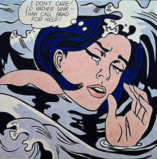
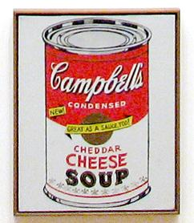

Orgins in the US
Although pop art began in the early 1950s, in America it was given its greatest impetus during the 1960s. The term "pop art" was officially introduced in December 1962; the occasion was a "Symposium on Pop Art" organized by the Museum of Modern Art. By this time, American advertising had adopted many elements and inflections of modern art and functioned at a very sophisticated level. Consequently, American artists had to search deeper for dramatic styles that would distance art from the well-designed and clever commercial materials. As the British viewed American popular culture imagery from a somewhat removed perspective, their views were often instilled with romantic, sentimental and humorous overtones. By contrast, American artists, bombarded every day with the diversity of mass-produced imagery, produced work that was generally more bold and aggressive.
Notable American Artists

Two important painters in the establishment of America's pop art vocabulary were Jasper Johns and Robert Rauschenberg. While the paintings of Rauschenberg have relationships to the earlier work of Kurt Schwitters and other Dada artists, his concern was for the social issues of the moment. His approach was to create art out of ephemeral materials. By using topical events in the life of everyday America, he gave his work a unique quality. Johns' and Rauschenberg's work of the 1950s is classified as Neo-Dada, and is visually distinct from the prototypical American pop art which exploded in the early 1960s.
Roy Lichtenstein is of equal importance to American pop art. His work, and its use of parody, probably defines the basic premise of pop art better than any other. Selecting the old-fashioned comic strip as subject matter, Lichtenstein produces a hard-edged, precise composition that documents while also parodying in a soft manner. Lichtenstein used oil and Magna paint in his best known works, such as Drowning Girl (1963), which was appropriated from the lead story in DC Comics' Secret Hearts #83. ( Drowning Girl is part of the collection of the Museum of Modern Art.) His work features thick outlines, bold colors and Ben-Day dots to represent certain colors, as if created by photographic reproduction. Lichtenstein said, "[abstract expressionists] put things down on the canvas and responded to what they had done, to the color positions and sizes. My style looks completely different, but the nature of putting down lines pretty much is the same; mine just don't come out looking calligraphic, like Pollock's or Kline's." Pop art merges popular and mass culture with fine art while injecting humor, irony, and recognizable imagery/content into the mix.
The paintings of Lichtenstein, like those of Andy Warhol, Tom Wesselmann and others, share a direct attachment to the commonplace image of American popular culture, but also treat the subject in an impersonal manner clearly illustrating the idealization of mass production.
Andy Warhol is probably the most famous figure in pop art. In fact, art critic Arthur Danto once called Warhol "the nearest thing to a philosophical genius the history of art has produced". Warhol attempted to take pop beyond an artistic style to a life style, and his work often displays a lack of human affectation that dispenses with the irony and parody of many of his peers.
Early US Exhibitions
Claes Oldenburg, Jim Dine and Tom Wesselmann had their first shows in the Judson Gallery in 1959 and 1960 and later in 1960 through 1964 along with James Rosenquist, George Segal and others at the Green Gallery on 57th Street in Manhattan. In 1960, Martha Jackson showed installations and assemblages, New Media - New Forms featured Hans Arp, Kurt Schwitters, Jasper Johns, Claes Oldenburg, Robert Rauschenberg, Jim Dine and May Wilson. 1961 was the year of Martha Jackson's spring show, Environments, Situations, Spaces . Andy Warhol held his first solo exhibition in Los Angeles in July 1962 at Irving Blum's Ferus Gallery, where he showed 32 paintings of Campell's soup cans, one for every flavor. Warhol sold the set of paintings to Blum for $1,000; in 1996, when the Museum of Modern Art acquired it, the set was valued at $15 million.
Donald Factor, the son of Max Factor, Jr., and an art collector and co-editor of avant garde literary magazine Nomad , wrote an essay in the magazine's last issue, Nomad/New York . The essay was one of the first on what would become known as pop art, though Factor did not use the term. The essay, "Four Artists", focused on Roy Lichtenstein, James Rosenquist, Jim Dine, and Claes Oldenburg.
In the 1960s, Oldenburg, who became associated with the pop art movement, created many happenings, which were performance art-related productions of that time. The name he gave to his own productions was "Ray Gun Theater". The cast of colleagues in his performances included: artists Lucas Samaras, Tom Wesselman, Carolee Schneemann, Oyvind Fahlstrom and Richard Artschwager; dealer Annina Nosei; art critic Barbara Rose; and screenwriter Rudy Wurlitzer. His first wife, Patty Mucha, who sewed many of his early soft sculptures, was a constant performer in his happenings. This brash, often humorous, approach to art was at great odds with the prevailing sensibility that, by its nature, art dealt with "profound" expressions or ideas. In December 1961, he rented a store on Manhattan's Lower East Side to house The Store , a month-long installation he had first presented at the Martha Jackson Gallery in New York, stocked with sculptures roughly in the form of consumer goods.
Opening in 1962, Willem de Kooning's New York art dealer, the Sidney Janis Gallery, organized the groundbreaking International Exhibition of the New Realists, a survey of new-to-the-scene American, French, Swiss, Italian New Realism, and British pop art. The fifty-four artists shown included Richard Lindner, Wayne Thiebaud, Roy Lichtenstein (and his painting Blam), Andy Warhol, Claes Oldenburg, James Rosenquist, Jim Dine, Robert Indiana, Tom Wesselmann, George Segal, Peter Phillips, Peter Blake, Yves Klein, Arman, Daniel Spoerri, Christo and Mimmo Rotella. The show was seen by Europeans Martial Raysse, Niki de Saint-Phalle and Jean Tinguely in New York, who were stunned by the size and look of the American artwork. Also shown were Marisol, Mario Schifano, Enrico Baj and Öyvind Fahlström. Janis lost some of his abstract expressionist artists when Mark Rothko, Robert Motherwell, Adolph Gottlieb and Philip Guston quit the gallery, but gained Dine, Oldenburg, Segal and Wesselmann. At an opening-night soiree thrown by collector Burton Tremaine, Willem de Kooning appeared and was turned away by Tremaine, who ironically owned a number of de Kooning's works. Rosenquist recalled: "at that moment I thought, something in the art world has definitely changed". Turning away a respected abstract artist proved that, as early as 1962, the pop art movement had begun to dominate art culture in New York.
A bit earlier, on the West Coast, Roy Lichtenstein, Jim Dine and Andy Warhol from New York City; Phillip Hefferton and Robert Dowd from Detroit; Edward Ruscha and Joe Goode from Oklahoma City; and Wayne Thiebaud from California were included in the New Painting of Common Objects show. This first pop art museum exhibition in America was curated by Walter Hopps at the Pasadena Art Museum. Pop art was ready to change the art world. New York followed Pasadena in 1963, when the Guggenheim Museum exhibited Six Painters and the Object , curated by Lawrence Alloway. The artists were Jim Dine, Jasper Johns, Roy Lichtenstein, Robert Rauschenberg, James Rosenquist, and Andy Warhol. Another pivotal early exhibition was The American Supermarket organised by the Bianchini Gallery in 1964. The show was presented as a typical small supermarket environment, except that everything in it—the produce, canned goods, meat, posters on the wall, etc.—was created by prominent pop artists of the time, including Apple, Warhol, Lichtenstein, Wesselmann, Oldenburg, and Johns. This project was recreated in 2002 as part of the Tate Gallery's Shopping: A Century of Art and Consumer Culture .
By 1962, pop artists started exhibiting in commercial galleries in New York and Los Angeles; for some, it was their first commercial one-man show. The Ferus Gallery presented Andy Warhol in Los Angeles (and Ed Ruscha in 1963). In New York, the Green Gallery showed Rosenquist, Segal, Oldenburg, and Wesselmann. The Stable Gallery showed R. Indiana and Warhol (in his first New York show). The Leo Castelli Gallery presented Rauschenberg, Johns, and Lichtenstein. Martha Jackson showed Jim Dine and Allen Stone showed Wayne Thiebaud. By 1966, after the Green Gallery and the Ferus Gallery closed, the Leo Castelli Gallery represented Rosenquist, Warhol, Rauschenberg, Johns, Lichtenstein and Ruscha. The Sidney Janis Gallery represented Oldenburg, Segal, Dine, Wesselmann and Marisol, while Allen Stone continued to represent Thiebaud, and Martha Jackson continued representing Robert Indiana.
In 1968, the São Paulo 9 Exhibition – Environment U.S.A.: 1957–1967 featured the "Who's Who" of pop art. Considered as a summation of the classical phase of the American pop art period, the exhibit was curated by William Seitz. The artists were Edward Hopper, James Gill, Robert Indiana, Jasper Johns, Roy Lichtenstein, Claes Oldenburg, Robert Rauschenberg, Andy Warhol and Tom Wesselmann.